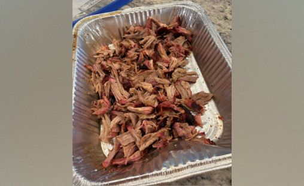

Pulled Pork
A classic game day dish done right

Method
Pellet grill
Ingredients
One bone in pork butt, mustard, Big Cove BBQ Seasoning
Steps
The night before, apply mustard binder and season generously, then refrigerate
When ready to cook, prepare smoker at 200 degrees F
Smoke pork butt until internal temp hits 160 degrees F (this tends to take us around 8 hours)
Raise smoker to 225 degrees F
Continue smoking pork butt until internal temp reaches 190 degrees F and probe tender (around 4 more hours)
Shred and season with Big Cove BBQ Seasoning
Serve up and enjoy! Goes great as sandwich, taco, nachos, or as is
Inspired by Malcom Reed's Pulled Pork on a Pellet Grill recipe